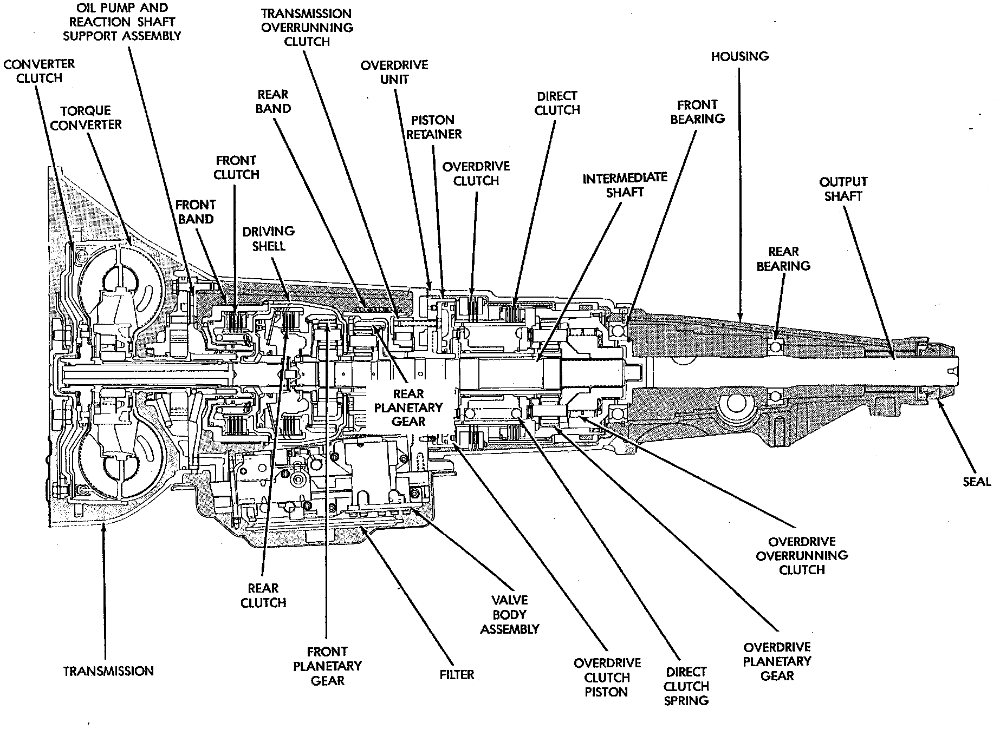

General Information

The 42/44RE is a four speed fully automatic transmission with an electronic governor. First through third gear ranges are provided by the clutches, bands, overrunning clutch, and planetary gear sets in the transmission. Fourth gear range is provided by the overdrive unit that contains an overdrive clutch, direct clutch, planetary gear set, and overrunning clutch. The overdrive clutch is applied in fourth gear only. The direct clutch is applied in all ranges except fourth gear. The torque converter clutch is controlled by the Powertrain Control Module (PCM). The torque converter clutch is hydraulically applied and is released when fluid is vented from the hydraulic circuit by the Torque Converter Control (TCC) solenoid on the valve body. The torque converter clutch engages in fourth gear, and in third gear when the O/D switch is OFF. Engagement occurs when the vehicle is moving at a steady speed after the vehicle has warmed up. The torque converter clutch disengages when the accelerator is applied. The 42/44 RE transmission is cooled by an integral fluid cooler inside the radiator.